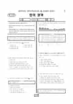

문제지


시험지를 먼저 풀어 보세요. 등급컷·표준점수·난이도는 흐리게 가려 뒀어요.
정답 변경 없음
이의신청 5문항 · 평가원 상세 답변 5문항
평가원 답변
왼쪽 그래프는 마감 시간까지 기계와 인간의 작업 유형이 다르다는 것을 보여 주는 그래프입니다. 기계와 달리 인간은 마감 시간이 다가올수록 성취도가 급격히 증가한다는 것을 의미합니다. 오른쪽 그래프는 기계와 인간의 대비를 보여 주는 것이 아니라, 중간 마감을 설정했을 때와 그렇지 않았을 때를 대비적인 상황으로 설정하여 성취도에 차이가 발생할 수 있다는 것을 나타내는 그래프입니다. 따라서 이러한 그래프 분석을 ‘효과적인 공부’와 관련지었을 때 이끌어 낼 수 있는 논지에 해당되는 것은 <보기>의 ‘ㄷ’과 ‘ㄹ’입니다.중간 마감을 휴식으로 생각할 수 있다고 보는 것은 적절하지 못합니다. 일반적으로는 공부하는 과정에서 가끔씩 휴식을 취하는 것이 효과적일 수 있겠지만, 제시된 두 그래프가 의미하는 바와는 관련이 없습니다. 다시 말해 마감까지 시간이 얼마나 남았느냐에 따라 성취도의 차이가 있을 수 있다는 의미이지, 쉬면서 공부하는 것이 효과적이라는 의미는 될 수 없습니다. 또한 오른쪽 그래프에서 기계의 성취도를 나타내는 선의 제시 여부는 문항의 풀이 과정에 아무런 영향을 주지 않습니다. 이 문항에서는 제시된 그래프를 바탕으로 하여 이끌어 낼 수 있는 논지를 찾을 것을 요구하고 있습니다. 따라서 그래프에 표현되지 않은 사항을 추가하여 새로운 해석을 부여하는 방식으로 이 문항을 풀면 안 됩니다. 언어 영역
이의 요지
②, ③, ⑤번 답지가 이의 제기 내용과 관련이 있으므로 다음과 같이 답변합니다
평가원 답변
먼저 이 문항은 문두에서 드러나듯이 사실 확인이 아니라 제시된 내용을 바탕으로 추론을 요구하는 문항이라는 점을 염두에 두고 풀어야 합니다. ②, ③, ⑤번 답지가 이의 제기 내용과 관련이 있으므로 다음과 같이 답변합니다.②: 질문자가 주장하는 것과 달리, 실제로 현장에서 품질 특성값의 평균과 목표값이 일치하지 않는 경우가 더 많습니다. 이러한 이유로 현장에서는 공정을 안정시키고 동시에 두 값을 일치시키려고 부단히 노력하는 것입니다. 또한 평균을 중심으로 흩어져 있는 것과 그것들의 평균이 목표값과 일치하느냐의 여부는 별개의 문제입니다. 지문에서는 두 값이 서로 일치하는지의 여부를 알 수 없으므로 답지 ②가 정답입니다.③: 평균과 목표값이 일치하지 않는 상태가 되면 일치하는 상태보다 불량이 더 많이 발생하지만, 이 때의 원인은 불일치 때문이지 표준 편차 때문은 아닙니다. 표준 편차는 불량률을 좌우하는 또 다른 독립적 요소입니다. 따라서 평균과 목표값이 일치하지 않더라도(세 번째 문단에 나와 있듯이 실제로 평균은 목표값에서 ±1.5시그마 정도 벗어날 수 있다.) 그 상태에서 표준 편차가 적을수록 불량은 줄어듭니다. 따라서 평균과 목표값이 불일치 상태에 있더라도 그 상황에서 표준 편차가 적으면 그렇지 않을 때보다 불량은 줄 것입니다. 이것은 지문에서 미루어 알 수 있는 내용이므로 타당한 진술입니다. ⑤: 시그마 수준의 개념과 원리에 대한 설명은 두 번째 문단에 있습니다. “평균에서 규격 하한 혹은 규격 상한까지의 거리를 시그마의 배수로 표현할 때”, “평균에서 규격 하한 혹은 규격 상한까지의 거리가 시그마의 몇 배가 되느냐”라고 하여 ‘규격 하한 혹은 규격 상한’을 두 차례나 언급하면서 시그마 수준의 개념이 규격의 어느 한 편과 관련이 있음을 밝혔기 때문에(즉 AND의 개념이 아니라 OR의 개념임을 밝혔기 때문에) 답지 ⑤의 진술이 타당함을 알 수 있습니다. 언어 영역
평가원 답변
온건한 공평주의자는 상황이 같을 때에만 개인적 선호가 허용될 수 있다고 주장합니다. 지문의 여섯째 줄에 “사람들은 인종, 성별, 연령에 관계없이 모두 신체와 생명, 복지와 행복에 있어서 동일한 가치를 지닌다.”라고 나와 있듯이, 나이는 상황을 다르게 만드는 조건이 될 수 없습니다. 그러나 간병인이 있고 없음은 상황을 다르게 만드는 조건이기 때문에 순이의 외할머니와 친할머니가 처한 상황은 다릅니다. 그러므로 순이는 간병인이 없는 친할머니를 도와야 합니다. 언어 영역
평가원 답변
이 작품은 스승과 제자의 예술관의 차이를 서사적으로 그려내고 있습니다. 이 작품에서 고죽은 자신의 스승 석담과 결별했지만, 자신의 제자인 초헌을 만나 그에게서 스승의 예술혼을 기대하기도 합니다. 또한 결별이라는 극단적인 상황은 두 사람이 만나 갈등하고 위기가 증폭된다는 서사적 상황에서 비롯된 것입니다. 이러한 일련의 과정은 갈등의 제시와 위기 상황의 등장, 그리고 파국이라는 극적 과정을 그대로 밟아가고 있습니다. 극적이라는 용어는 갈등과 위기, 전환적 파국 등으로 이어지는 일련의 과정을 지칭하는 것입니다. 답지 ③의 ‘만남과 헤어짐’은 계기적인 관계를 가진 용어로 이해해야 합니다. 대개의 서사 전개에서 인물들은 서로 만나고 헤어지는 과정을 겪습니다. 이 글에서 ‘헤어짐’을 극적으로 그려내었으나, ‘만남’을 극적으로 그려내지 않았다는 이해는 ‘만남과 헤어짐’의 계기적 관계를 고려하지 않은 것입니다. 언어 영역
평가원 답변
우리는 무엇이든 정확하게 측정하기 위해서는 재기 위한 기준이 먼저 확립되어 있어야 한다고 생각을 합니다. 그런데 샤이블러는 기준이 없어도 그러한 일을 할 수 있다는 것을 보여 주었습니다. 샤이블러가 미지의 소리굽쇠의 진동수를 알아내기 위해 사용한 전제는 “서로 다른 진동수를 갖는 두 음이 함께 울릴 때 생기는 맥놀이의 진동수는 두 음의 진동수의 차에 해당한다.”는 것과 “한 옥타브만큼 차이 나는 두 음 중 높은 음의 진동수는 낮은 음의 진동수의 두 배가 된다.”는 것 두 가지입니다. 샤이블러의 목표는 한 옥타브 차이 나는 두 음이 얼마의 진동수 차이를 갖는가를 알아내는 것이었습니다. 이 두 음의 진동수를 a, b(a<b)라고 합시다. 우선 두 음이 한 옥타브 차이가 나므로 2a=b …… ①입니다. 그리고 맥놀이를 이용해서 샤이블러가 4Hz의 차이를 갖는 여러 개의 소리굽쇠를 만들어서, 결국 1번부터 56번까지 소리굽쇠를 만들었을 때 두 소리굽쇠는 한 옥타브 차이가 나는 음을 냈고, 56번이 1번에 비해 220Hz 낮은 진동음을 낸다는 것을 실험으로 알아냈던 것입니다. 이것을 식으로 표현하면 b-a=220 …… ②이 됩니다. ①과 ②를 연립해서 풀면 a=220, b=440…… ③임을 알게 됩니다. 그러므로 1번 소리굽쇠는 440Hz, 56번 소리굽쇠는 220Hz의 진동수를 갖습니다. 58번 문항은 이러한 샤이블러의 측정 방법의 원리를 제대로 이해했는가를 묻는 문항입니다. ‘위 글의 내용으로 보아’라고 한 것은 지문 전체를 가리키는 것이 당연합니다. 지문에서 “1번 소리굽쇠의 고유 진동수는 440Hz, 56번 소리굽쇠의 고유 진동수는 220Hz임을 쉽게 알 수 있었다.”라고 단정을 지어 놓았는데, 문두에서 “샤이블러가 사용한 1번 소리굽쇠가 200Hz의 고유 진동수를 갖는다고 할 때”라고 전제한 것은 1번 소리굽쇠를 440Hz에서 200Hz로 바꾸어 놓고 새로운 실험 상황에 샤이블러의 방법을 적용해 보라는 것입니다. 앞의 식에서 b=200으로 놓고 이것을 여전히 유효한 ①번 식 2a=b에 대입하면 a=100이 됩니다. 샤이블러는 200Hz의 소리굽쇠를 가지고 시작을 해서 4Hz씩 낮은 음을 내는 소리굽쇠를 계속 만들어 갔을 것입니다. 그렇게 해서 한 옥타브 낮은 음 즉, 100Hz의 음을 내는 소리굽쇠를 만드는 데까지 갔을 것입니다. 200과 100의 차는 100이므로 이 사이를 4Hz의 간격으로 나누면 모두 25개의 간격이 들어갑니다. 그러므로 소리굽쇠는 모두 26개가 있어야 합니다. <보기>를 점검해 보겠습니다. 어떤 음보다 한 옥타브 낮은 음은 원래의 음의 절반의 진동수를 갖는다는 것은 항상 성립하는 법칙이므로 200의 절반은 100이 됩니다. 따라서 ㄱ은 옳습니다. 두 음의 진동수의 차이는 100Hz이므로 ㄴ은 틀립니다. 앞에서 구했듯이 필요한 소리굽쇠의 수는 26개이므로 ㄷ은 틀립니다.
발행 기관: 한국교육과정평가원(KICE). 파일 위치: 이 사이트가 보관한 사본. 저작권은 발행 기관에 있습니다. 원본과 다르거나 게시 중단이 필요하면 연락처로 알려 주세요. 등급컷 출처 구분은 데이터 원칙에서 설명합니다.